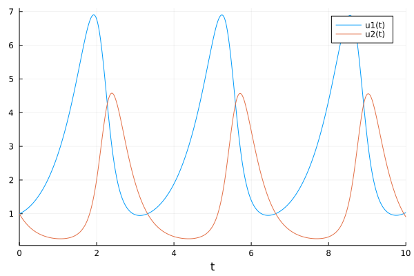

Extensibility of the language
DifferentialEquations
A package for solving differential equations, similar to odesolve in Matlab.
Example:
using DifferentialEquations
function lotka_volterra(du,u,p,t)
x, y = u
α, β, δ, γ = p
du[1] = dx = α*x - β*x*y
du[2] = dy = -δ*y + γ*x*y
end
u0 = [1.0,1.0]
tspan = (0.0,10.0)
p = [1.5,1.0,3.0,1.0]
prob = ODEProblem(lotka_volterra,u0,tspan,p)
sol = solve(prob)
using Plots
plot(sol)
Measurements
A package defining "numbers with precision" and complete algebra on these numbers:
using Measurements
a = 4.5 ± 0.1
b = 3.8 ± 0.4
2a + b
sin(a)/cos(a) - tan(a)It also defines recipes for Plots.jl how to plot such numbers.
Starting ODE from an interval
using Measurements
u0 = [1.0±0.1,1.0±0.01]
prob = ODEProblem(lotka_volterra,u0,tspan,p)
sol = solve(prob)
plot(sol)
- all algebraic operations are defined,
- passes all grid refinement techniques
- plot uses the correct plotting for intervals
Integration with other toolkits
Flux: toolkit for modelling Neural Networks. Neural network is a function.
- integration with Measurements,
- Integration with ODE (think of NN as aprt of the ODE)
Turing: Probabilistic modelling toolkit
- integration with FLux (NN)
- interation with ODE
- using arbitrary bijective transformations, Bijectors.jl